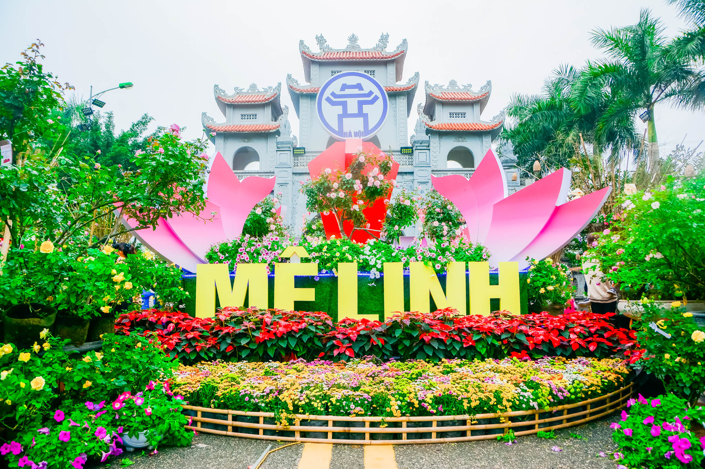
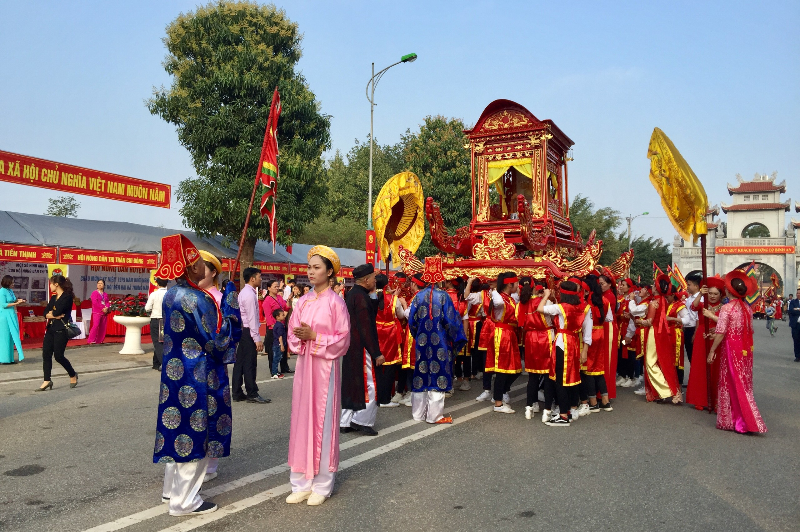
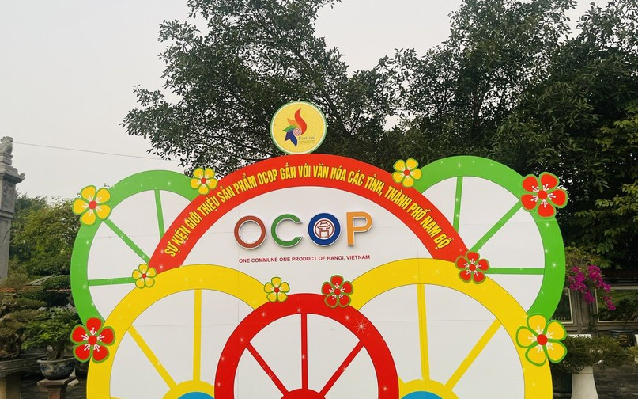

Danh Sách Sự Kiện
-

Lễ hội hoa Mê Linh
Với chủ đề "Mê Linh rực rỡ sắc hoa", Lễ hội hoa Mê Linh năm 2022 với điểm nhấn là con đường trái tim dài 20m được trang trí 100% từ hoa hồng và sự kết hợp khéo léo của các thác hoa cao 4m, phủ kín hoa với sự tương tác của nghệ thuật ánh sáng được các nghệ nhân trang trí hoa nghiên cứu tỉ mỉ.
-

Lễ hội đền Hai Bà Trưng
Lễ hội đền Hai Bà Trưng Mê Linh được tổ chức thường niên nhằm giáo dục cũng như khuyến khích truyền thống yêu nước, nhằm góp phần nâng cao tinh thần và đạo lý "Uống nước nhớ nguồn" của dân tộc Việt Nam.
-

Sự kiện giới thiệu sản phẩm OCOP
Tại sự kiện sẽ có hơn 100 gian hàng trưng bày, giới thiệu, quảng bá hàng nghìn dòng sản phẩm OCOP, như: Hàng nông sản sạch, thực phẩm chế biến, đồ gỗ, gốm sứ, dệt may....
Về Mê Linh
Nhắc đến Mê Linh, du khách trong và ngoài nước còn nhớ đến hình ảnh của một vùng trồng hoa rộng lớn, một trong những “vựa hoa” nổi tiếng của Thủ đô. Các làng nghề trồng hoa ở xã Mê Linh, Đại Thịnh ngày càng khẳng định uy tín, mang thương hiệu không kém vùng trồng hoa Đà Lạt. Cùng với đó, các làng nghề trồng rau an toàn, làm bánh đa nem hay đan lát... đã góp phần tích cực trong việc phát triển kinh tế - xã hội của địa phương nói chung và ngành Du lịch của huyện nói riêng.